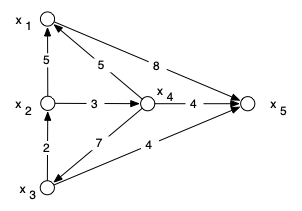
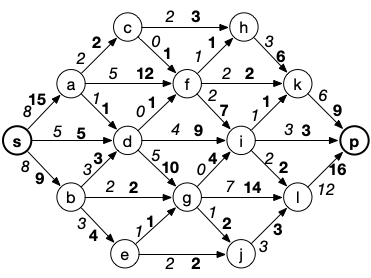
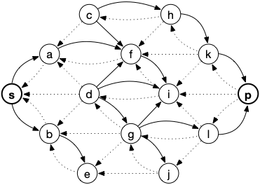
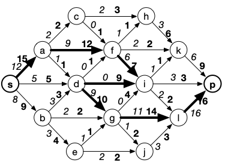
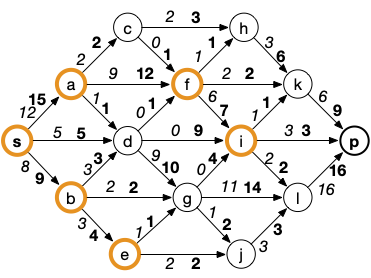

Exercices d'application sur les flots
Application directe
Une ressource est disponible sur 5 sites $x_1$, $x_2$, $x_3$, $x_4$ et $x_5$ en quantités respectives, 30,70,80,60 et 60. Cette ressource est demandée dans 6 sites $y_1$, $y_2$, $y_3$, $y_4$ , $y_5$ et $y_6$ en quantités respectives 40, 20, 40, 40, 30 et 70. Les possibilités d'acheminement des ressources en $x_i$ vers le site $y_j$ sont indiquées dans le tableau ci-dessous (une valeur
sur la ligne $x_i$ et la colonne $y_j$ signifie un acheminement possible de $x_i$ vers $y_j$, d'une capacité max correspondant à la valeur indiquée et une
absence de valeur signifie un acheminement impossible) :
Est-il possible de satisfaire les demandes des $y_j$, à partir des possibilités des $x_i$ et des possibilités de transport ?
Modification du flot max
Quatre industries $x_1$, $x_2$, $x_3$ et $x_4$ rejetant des eaux polluées doivent faire traiter ces eaux à la même station d'épuration $x_5$. Elles peuvent utiliser le réseau de canalisations de la figure suivant :

Les capacités des canalisations sont données par les nombres (exprimés en dizaines de m$^3$ par seconde) associés aux arcs du graphe. D'autre part, les eaux rejetées des centres $x_1$, $x_2$ et $x_4$ sont
réceptionnées initialement dans des bassins de capacités finies respectivement égales à 4, 3 et 4 dizaines de m$^3$ par seconde. Le bassin de réception des eaux rejetées du centre $x_3$ est très grand et peut pratiquement être considéré de capacité infinie.
Déterminer un plan d'épuration des eaux polluées de volume (par unité
de temps) maximal.
Des problèmes techniques vont rendre inutilisable une partie $\lambda$ de la capacité (initialement égale à 4) du bassin de réception des eaux rejetées par le centre $x_1$. Quelles seront les conséquences sur le plan d'épuration optimal ?
Graphe d'écart
On considère le réseau suivant (en gras les capacités, en italique les flux) :

en python
en python
G = {
's': {'a', 'd', 'b'},
'a': {'c', 'f', 'd'},
'b': {'d', 'g', 'e'},
'c': {'h', 'f'},
'd': {'f', 'i', 'g'},
'e': {'g', 'j'},
'f': {'h', 'k', 'i'},
'g': {'i', 'l', 'j'},
'h': {'k'},
'i': {'k', 'p', 'l'},
'j': {'l'},
'k': {'p'},
'l': {'p'},
'p': set()
}
c = {
('s', 'a'): 15,
('s', 'b'): 9,
('s', 'd'): 5,
('a', 'f'): 12,
('a', 'c'): 2,
('a', 'd'): 1,
('b', 'd'): 3,
('b', 'e'): 4,
('b', 'g'): 2,
('c', 'h'): 3,
('c', 'f'): 1,
('d', 'i'): 9,
('d', 'g'): 10,
('d', 'f'): 1,
('e', 'g'): 1,
('e', 'j'): 2,
('f', 'h'): 1,
('f', 'k'): 2,
('f', 'i'): 7,
('g', 'i'): 4,
('g', 'l'): 14,
('g', 'j'): 2,
('h', 'k'): 6,
('i', 'p'): 3,
('i', 'k'): 1,
('i', 'l'): 2,
('j', 'l'): 3,
('k', 'p'): 9,
('l', 'p'): 16
}
f = {
('s', 'a'): 8,
('s', 'b'): 8,
('s', 'd'): 5,
('a', 'f'): 5,
('a', 'c'): 2,
('a', 'd'): 1,
('b', 'd'): 3,
('b', 'e'): 3,
('b', 'g'): 2,
('c', 'h'): 2,
('c', 'f'): 0,
('d', 'i'): 4,
('d', 'g'): 5,
('d', 'f'): 0,
('e', 'g'): 1,
('e', 'j'): 2,
('f', 'h'): 1,
('f', 'k'): 2,
('f', 'i'): 2,
('g', 'i'): 0,
('g', 'l'): 7,
('g', 'j'): 1,
('h', 'k'): 3,
('i', 'p'): 3,
('i', 'k'): 1,
('i', 'l'): 2,
('j', 'l'): 3,
('k', 'p'): 6,
('l', 'p'): 12
}
Tracer le graphe d'écart associé à ce réseau.
solution
solution

Les arcs plein sont les arcs directs, les arcs en pointillés, les arcs retours.
Créez le graphe d'écart en python.
solution
solution
Ge = graphe_écart(G, c, f)
print("Graphe d'écart :")
for x in Ge:
print(x, Ge[x])
Cherchez à améliorer le flot avec une chaîne augmentante en utilisant le graphe d'écart, puis augmentez le jusqu'à son maximum avec l'algorithme de Ford et Fulkerson en exhibant une coupe minimum.
solution
solution
Une chaîne augmentante et l'augmentation de flot associée dans la foulée :

La coupe min :

Créez la coupe min en python
solution
solution
ford_et_fulkerson(G,c, 's', 'p',f) # on rend le flot maximum
print("coupe min :", set(marquage(G, c, 's', 'p', f))) # les sommets marqués sont la coupe min